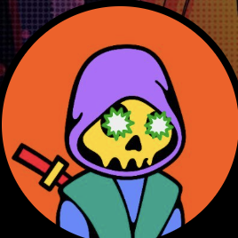

✅ Em nov/2021, o soft fork Taproot aumentou a capacidade de dados na witness das transações. Sem ele, nada disso existiria.
✅ Em jan/2023, Casey Rodarmor lançou os Ordinals — a forma de inscrever dados arbitrários em satoshis individuais (imagens, texto, arte) direto na L1 do Bitcoin, usando a witness do Taproot. Pela primeira vez, dava pra eternizar algo na maior blockchain de todas, sem camada de fora.
✅ Em março/2023, um programador anônimo, domo, criou um padrão de tokens fungíveis em cima das inscriptions: o BRC-20. Funciona inscrevendo JSON em satoshis — cada operação (deploy, mint, transfer) é uma inscrição separada. O primeiro token foi o "ordi", e o mercado explodiu: mais de US$1 bi de market cap em semanas. Fontes: IQ.wiki
Mas o BRC-20 é reconhecidamente ineficiente — até pelo próprio domo. Como cada balanço e transferência vive numa pequena saída de Bitcoin, ele entope o Bitcoin de UTXOs pequenos (dust). Foi tokenização dentro do Bitcoin, mas do jeito sujo.
✅ Em nov/2023, a Binance listou o ORDI (o primeiro BRC-20) — sem cobrar taxa de listagem; o preço dobrou em horas. Fonte: Decrypt
💭 A leitura: as corretoras perceberam o que isso abre. Se o Bitcoin vira uma camada de ativos, o "cassino do Bitcoin" pode virar um mercado gigantesco — e elas querem estar na porta.
✅ Em abril/2024, no bloco do halving (840.000), Casey voltou e resolveu a sujeira: as Runes usam o modelo UTXO + o opcode OP_RETURN pra criar tokens sem gerar UTXOs-lixo — a fonte do bloat do BRC-20. A $DOG é a Rune #3, etched no bloco do halving. Fonte: Medium
Dust é uma saída de Bitcoin tão pequena (tipicamente < ~546 satoshis) que a taxa pra gastá-la custaria mais do que ela vale. É economicamente ingastável — e tende a ficar pra sempre no UTXO set (o conjunto de saídas não-gastas que todo nó full precisa guardar na memória). Quanto mais dust, mais pesado fica rodar um nó. Isso é a "poluição".
O que NÃO é dust: um output OP_RETURN não é dust — ele carrega 0 BTC, é provadamente ingastável e por isso nem entra no UTXO set (os nós podem podar). É dado histórico no bloco, não peso permanente na memória dos nós.
Por isso Runes polui muito menos: o BRC-20 deixa UTXOs dust que os nós guardam pra sempre; a mensagem das Runes vive no OP_RETURN (podável). Nas palavras do próprio Casey, as Runes criam tokens "sem gerar UTXOs ingastáveis, que eram a maior fonte de bloat do BRC-20".
| BRC-20 | Runes | |
|---|---|---|
| Criador / data | domo (anônimo) · mar/2023 | Casey Rodarmor · abr/2024 |
| Base técnica | Inscriptions (Ordinals) — JSON em sats | Modelo UTXO nativo + OP_RETURN |
| Como guarda os dados | Inscrição na witness (Taproot) | Mensagem no OP_RETURN (podável) |
| Impacto no UTXO set | Incha — cria muitos UTXOs pequenos / dust | Não incha — OP_RETURN não entra no UTXO set |
| Transferência | Inscrição "transfer" + envio (vários passos/UTXOs) | Uma transação Bitcoin normal |
| Mintagem | Cada mint = uma inscrição (mais bloat) | Mint nativo do protocolo, eficiente |
| Validação | Depende de indexador off-chain (ex: UniSat) | Regras no protocolo, mais on-chain-native |
| Resultado | Pesado · "polui" | Leve · "limpo" |
✅💭 Casey fez algo que os maximalistas técnicos nunca fizeram: trouxe gente normal pra dentro do Bitcoin. Artistas, criadores, pessoas menos técnicas — gente que entendeu a ideia de eternizar algo na maior blockchain de todas. O Bitcoin deixou de ser um clube fechado de "só moeda" e virou também uma camada de cultura e propriedade.
📺 Casey explica a Ordinal Theory: Ordinal Theory Explained
⚖️ Proposta (Luke Dashjr / Bitcoin Knots) pra limitar dados não-monetários no Bitcoin — mira Ordinals e Runes. ✅ Os mineradores são contra (perdem taxa); Adam Back nega ser censura; a sinalização está longe do limiar.
💭 A crítica: o Bitcoin foi feito pra ser sem permissão. Os velhos maximalistas querem instalar um porteiro num sistema desenhado pra não ter porteiro — censurar o que pessoas livres escolhem eternizar é trair o DNA do Bitcoin. A história raramente fica do lado de quem tenta fechar a porta.
Rune #3 · 100% airdrop pra ~75.000 holders · CC0 · sem pré-venda/time/insider · fundador ~0,008%. Fair launch verificável.
MVRV 0,22 → 77,5% do supply holdado EM PREJUÍZO e mesmo assim 82% é mão de longo prazo. Apanha e não vende. A comunidade mais fiel do crypto, em número.
Prova A+B: MM2 e Whale7 assinam os inputs das MESMAS 8 transações (co-gasto) → mesmo dono. Reproduza em mempool.space.
A Binance tem BRC-20 listados (ORDI etc.) e ganha com eles. As Runes — e a DOG — competem com esse modelo e devolvem o protagonismo da tokenização ao Bitcoin L1. Isso cria um incentivo plausível pra a Binance não apoiar Runes — e até pra torcer contra a DOG.
Não é declarado, e não é prova fechada — é leitura de incentivo: o motivo que explicaria a falta de apoio e os jogos no order book. Seguimos os dados, não a narrativa — e vamos descobrir.
Publicar fato reproduzível, nunca acusação de intenção · comportamento ≠ intenção provada · lei brasileira difere (consultar advogado antes de acusação nominal) · nada de coordenar preço — isso é manipulação, vira o que se combate.
Que já temos prova fechada da entidade coordenada — é suspeita sob investigação, não fato · que há prova de intenção criminosa em qualquer exchange · qualquer previsão de preço.
As Runes não são só meme — elas movem a rede Bitcoin de verdade, e a imprensa tier-1 registrou:
Trajetória honesta: as Runes explodiram no lançamento (abr/2024), recuaram ao longo de 2025, e tiveram forte revival em 2026 (Runes:BRC-20 ≈ 95:5 em volume). O uso real da rede via Runes é fato — registrado por veículos tier-1.
Este estudo é coletivo — ombros de gigantes que abrem os dados:

Clique nos avatares pra visitar. Quer ser creditado? Contribua com dados/investigação — abra um PR.
Vire investigador — vigie a chain com a ferramenta open-source.
Auto-custódia — traga seu DOG da exchange pra sua carteira.
Accountability — cobre com o recibo na mão.